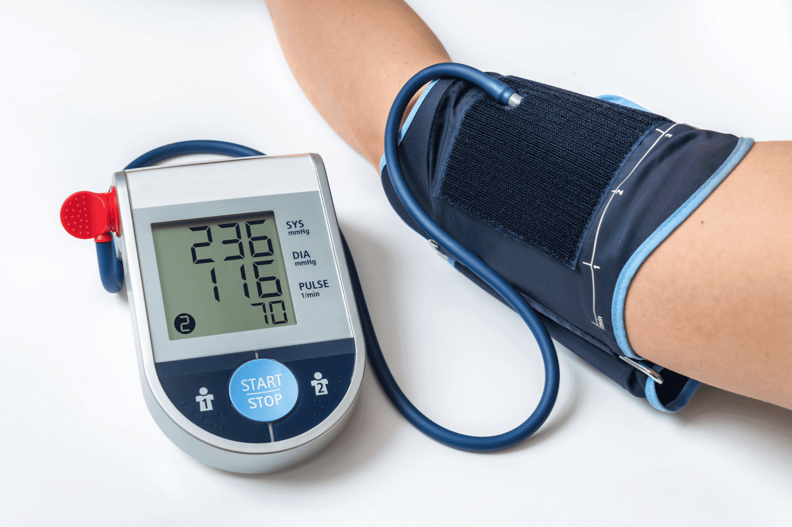

ปรับสมดุลลำไส้
ปรับสมดุลลำไส้
05 พ.ย. 2026
กรดไหลย้อนตอนกลางคืน นอนไม่ได้? 5 พฤติกรรมที่ควรเลิกก่อนเข้านอน
กระดูกและข้อ
05 พ.ย. 2026
โรคเก๊าท์กินผักอะไรได้บ้าง: เช็กลิสต์ผักที่กินได้ ผักที่ควรระวัง และเข้าใจพิวรีนในผัก
กระดูกและข้อ
01 มิ.ย. 2026
ลุกก็โอย นั่งก็โอย เจ็บหัวเข่าแปล๊บๆ ทุกครั้งที่ก้าวลงบันได สัญญาณข้อเข่าเสื่อมที่คนวัย 40+ ต้องฟื้นฟูอย่างไรก่อนจะสาย?
01 มิ.ย. 2026
หน้าจอมือถือทำลายดวงตามากกว่าที่คิด: วิธีดูแลตาพร่ามัว-ตาแห้งเรื้อรัง ภัยเงียบจากแสงสีฟ้าที่คนยุคปัจจุบันมองข้ามไม่ได้
ฟื้นฟูร่างกาย
01 มิ.ย. 2026
หูอื้อ ฟังไม่ชัด ต้องถามซ้ำบ่อย? รู้ทันสัญญาณประสาทหูเสื่อมตามวัย
ลำไส้และการขับถ่าย
01 มิ.ย. 2026
นั่งเล่นมือถือในห้องน้ำ เสี่ยงริดสีดวงทวารอย่างไร? รู้ทันพฤติกรรมที่ควรเลี่ยง
ปรับสมดุลลำไส้
01 มิ.ย. 2026
เช็ก 3 พฤติกรรมที่อาจทำให้ท้องผูกมากขึ้น พร้อมวิธีดูแลระบบขับถ่าย
01 มิ.ย. 2026
ไม่อยากกินยาคุมเบาหวานไปตลอดชีวิต? เผย 5 สมุนไพรธรรมชาติ ตัวช่วยฟื้นฟูตับอ่อน ลดระดับน้ำตาลในเลือด ดูแลเบาหวานจากภายใน

หัวใจและหลอดเลือด
01 มิ.ย. 2026
สัญญาณเตือนความดันโลหิตสูง: วิธีสังเกตอาการ โดยไม่ต้องใช้เครื่องวัด
ลดน้ำหนัก
01 มิ.ย. 2026
ลดน้ำหนักแบบคนขี้เกียจ: 5 เคล็ดลับเบิร์นไขมันเก่า ไม่ต้องออกกำลังกายหนักก็ลีนได้
01 มิ.ย. 2026
เสื่อมสมรรถภาพ ปัสสาวะแสบขัด ฉี่กระปริบกระปรอย เจาะลึกปัญหาต่อมลูกหมากโตที่ชายวัย 50+ ไม่ควรละเลย